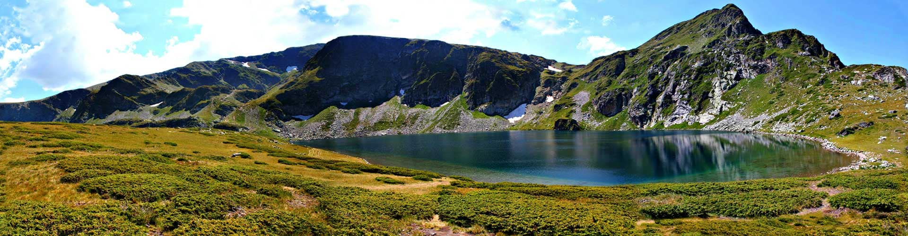
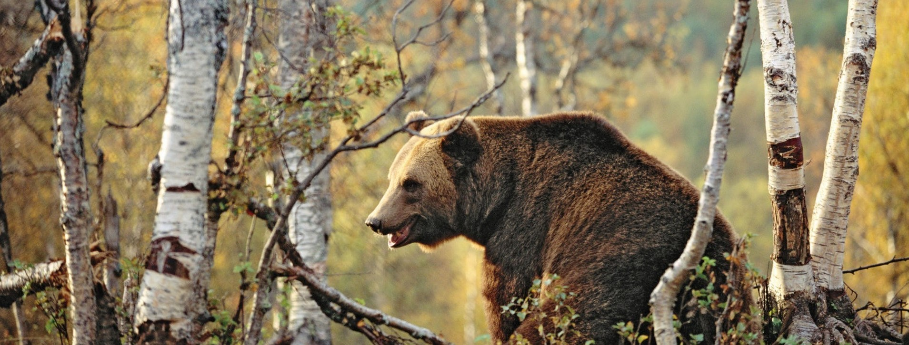

Местоположение
Национален парк “Рила” е разположен в Рила планина в западната част на България. Паркът включва безлесните части по билото на планината и част от горските иглолистни комплекси под него в четирите главни дяла на планината: Източен, Среден, Югозападен и Североизточен, съставляващи около 30 % от целия планински масив. Средната височина на върховете от основните била е около 2700 м, с най-високия връх в страната и Балканския полуостров – Мусала (2925 м).
Забележителности
На територията на НП “Рила” са обявени следните природни забележителности: водопад “Скакавица” (община Сапарева баня), водопад “Самоковището” (с. Бистрица, община Дупница) и водопад “Скакавец” (община Самоков) – естествени водопади, представляващи интерес за туризма и науката; вековно дърво “Змиевиден смърч” (община Самоков); “Морена” (с. Бистрица, община Дупница) – кът от парка, отличаващ се със своята научна, културна и естетична стойност; “Урдини езера” (с. Говедарци, община Самоков) – уникален за страната минералогичен комплекс, включващ нови за световната наука минерали, алпийска растителност с находища на голям брой редки и застрашени видове, и реликтна ледникова хидрофауна в Рила планина.
Животински свят
Национален парк “Рила” е една от най-значимите за фауната защитени територии в България и Европа. Територията му представлява изключително богата мозайка от различни по тип местообитания, повечето от които са практически непроменени от човешката дейност и съхраняват образци на разнообразни и естествени животински съобщества. Фауната на Парка е изключително богата и обхваща 2934 вида безгръбначни и 172 вида гръбначни животни. Повечето от тях са представени с многобройни и жизнени популации.
